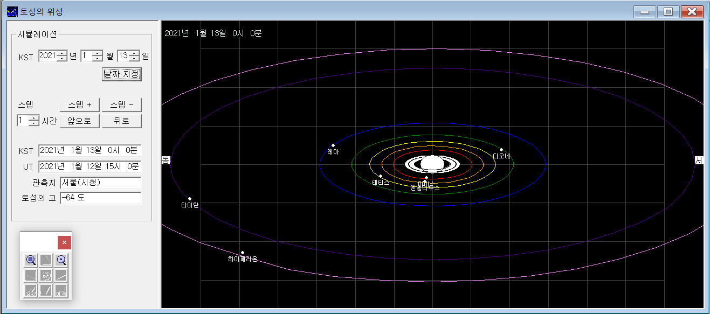

토성의 위성
토성의 위성 윈도에서는 토성의 8대 주요 위성의 입체적인 움직임을 보여준다. 8대 위성의 공전주기는 아래와 같다.
보통 타이탄, 리아 정도가 쉽게 관측된다.
| 위성 이름 |
영문 이름 |
공전주기(일) |
지름(km) |
발견 연도 |
| 미마스 |
Mimas |
0.94 |
397 |
1789 |
| 엔셀라두스 |
Enceladus |
1.37 |
504 |
1789 |
| 테티스 |
Tethys |
1.89 |
1,066 |
1684 |
| 디오네 |
Dione |
2.74 |
33 |
1684 |
| 레아 |
Rhea |
4.52 |
1,529 |
1672 |
| 타이탄 |
Titan |
15.95 |
5,151 |
1655 |
| 히페리온 |
Hyperion |
21.28 |
292 |
1848 |
| 이아페투스 |
Iapetus |
79.32 |
1,472 |
1671 |
토성의 위성 윈도는 모두 두 개의 작은 윈도로 구성되어 있다.
오른쪽 윈도는 임의 시간의 토성 8대 위성의 궤도 및 위치를 보여주고,
왼쪽 윈도는 시간 설정, 시뮬레이션을 조절하며 토성의 고도를 나타내어 해당 시간에
토성이 관측 가능한지를 보여준다.
|

|
|
좌측부터 컨트롤 윈도, 시뮬레이션 윈도이다.
|
컨트롤 윈도
컨트롤 윈도에서는 시뮬레이션 윈도의 시간 및 선택 사항을 조절한다. 월별 성도와
시뮬레이션 그룹 박스의 각 항목은 다음과 같은 기능을 한다.
- 시간 설정: 시뮬레이션 윈도의 시간을 해당일의 KST 기준 0시로 맞춘다.
- 스텝: 시뮬레이션의 시간 간격을 정해준다. '시간' 단위를 기준으로 하며 소수로도 표현할
수 있다. 10 분은 0.167 시간이다.
- 스텝+: 시뮬레이션 윈도의 시간을 정해진 스텝만큼 더해준다. Ctrl 키를 누른 상태에서
'스텝+' 버튼을 누르면 정해진 스텝의 1/10을 더해준다.
- 스텝-: 시뮬레이션 윈도의 시간을 정해진 스텝만큼 빼준다. Ctrl 키를 누른 상태에서
'스텝-' 버튼을 누르면 정해진 스텝의 1/10을 빼준다.
- 앞으로: 시간이 전진하는 방향으로 시뮬레이션을 시작한다. 스텝의 크기를 조절함으로서
시뮬레이션의 속도를 조절할 수 있다. 앞으로 버튼을 한 번 누르면 앞으로 버튼은 정지
버튼으로 바뀌고 정지 버튼이 눌리거나, 뒤로 버튼이 눌릴때까지 전진 방향의 시뮬레이션은
계속된다.
- 뒤로: 시간이 후퇴하는 방향으로 시뮬레이션을 시작한다. 스텝의 크기를 조절함으로서
시뮬레이션의 속도를 조절할 수 있다. 뒤로 버튼을 한 번 누르면 뒤로 버튼은 정지 버튼으로
바뀌고 정지 버튼이 눌리거나, 앞으로 버튼이 눌릴때까지 전진 방향의 시뮬레이션은
계속된다.
- KST, UT: 시뮬레이션 윈도의 시간을 나타내다.
- 관측지: 관측지는 별바라기를 시작할 때 설정된 정보를 읽어 옵니다. 따라서, 관측지를 바꾸려면
지평좌표계 윈도에서 관측지를 변경 한 후, 별바라기를 종료했다가 다시 실행하면 됩니다.
- 고도: 주어진 시간과 관측지에서의 토성의 고도를 나타낸다. 고도를 보면 토성이 주어진
시간에 관측 가능한지 판단할 수 있다.
시뮬레이션 윈도
시뮬레이션 윈도에서는 토성 위성의 움직임을 보여준다.
- 확대/축소: 동서남북바의 확대/축소 버튼을 이용하여 시야를 조절할 수 있다.
토성의 반지름을 R로 표현할 때, 3 ~ 20R 까지 모두 8 단계로 시야를 조절할 수 있다.
- 격자선: 시야에 따라 0.5 ~ 2R 단위로 격자선을 보여준다.
별바라기 홈 최종 변경: 2020년 05월 31일